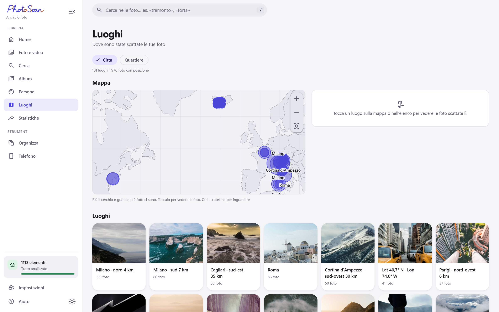
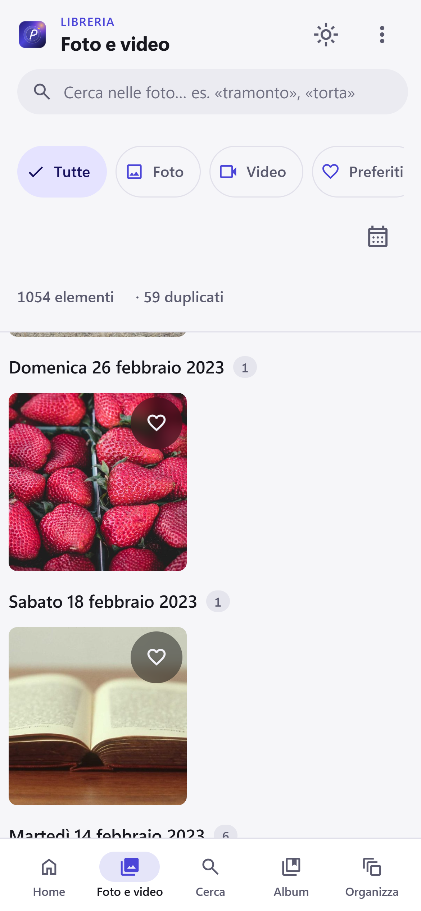

Automatic organization
Proposes folders by date and context, such as 2024/03 - Seaside holiday. Review everything in simulation before applying.
PhotoScan analyzes your photo and video archive right on your PC with local AI, finds duplicates and near-identical shots, lets you search by words, and proposes a clean folder structure by year, month and event.
Thousands of photos and videos scattered across old drives and unhelpful folder names — finally organized.
Proposes folders by date and context, such as 2024/03 - Seaside holiday. Review everything in simulation before applying.
Type "sunset", "birthday cake" or "dog in snow" to find the right pictures, even without tags or meaningful filenames.
Finds exact copies and near-identical photos. Pick what to keep or send to the Recycle Bin in bulk — nothing is deleted behind your back.
Reads GPS coordinates from your photos to display them on an interactive map and help you rediscover past trips.
Groups recurring faces and lets you name them. Face recognition is off by default and only runs if you enable it.
Copies photos and videos from an Android phone connected via USB. The phone is only read, nothing is deleted, and existing files are never overwritten.
Launches in its own window from the desktop shortcut, with light and dark themes and a responsive layout for smaller screens.
Click any screenshot to inspect it full-screen. Captured on a sample library built with Unsplash photos.






Pause and resume whenever you like — files already processed are never scanned twice.
PhotoScan's core rule is simple: no silent edits, no cloud uploads, and no automatic deletion.
_Duplicati; any files you choose to remove go to the
Windows Recycle Bin.
Download a single file, open it and follow the guided setup. The program checks your PC and picks the best configuration for you.
Guided installer for Windows 10 & 11 · Automatically detects NVIDIA GPU or CPU.
PhotoScan-Setup.exe.
No data leaves your computer. Your original photos stay untouched.
No. Analysis, search and organization run entirely on your computer. The only network connection is checking GitHub for new releases, which you can disable in Settings.
No. Originals remain read-only and duplicates are separated rather than auto-deleted. If you choose to free up space, selected files are moved to the Windows Recycle Bin after explicit confirmation.
Beyond the app and the recognition model, the catalog and thumbnail cache scale with your library size. PhotoScan is designed for archives around 200 GB and 14,000+ files.
Yes. Closing the app stops indexing cleanly, and reopening resumes from the files not yet processed.
Yes. Connect your phone via USB: PhotoScan supports both Android (MTP) and iPhone, reads your device in read-only mode, skips already-copied files automatically, and handles HEIC photos and videos.
JPEG, PNG, WebP, TIFF, HEIC (built-in support) and videos (MP4, MOV, MKV, etc. via FFmpeg). HEIC and TIFF files are displayed via locally generated JPEG previews.
New versions appear on GitHub Releases and inside Settings > Updates. Updates install on relaunch with an automatic backup.
No. It is disabled by default and can be enabled anytime in Settings.